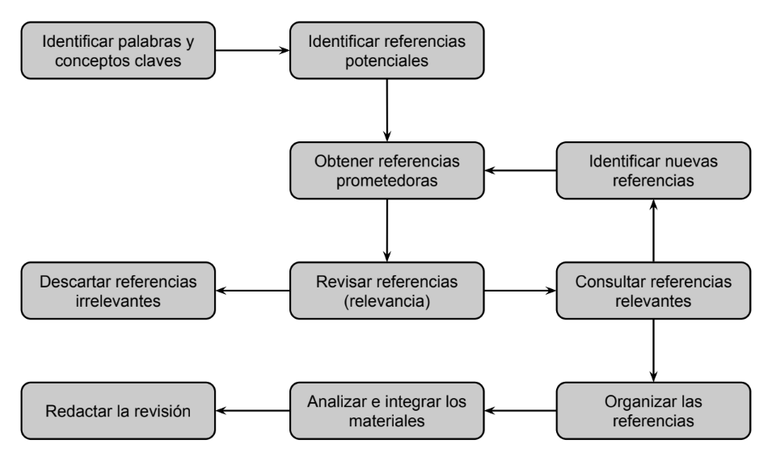

I Proyectos y protocolos
1
Proyecto
1.1
Definición
2
Protocolo
2.1
Generalidades
2.2
Estado del conocimiento
2.3
Preguntas de investigación
2.4
Objetivos de investigación
2.5
Justificación
2.6
Viabilidad
2.7
Diseño metodológico cuantitativo
2.8
Diseño metodológico cualitativo
2.9
Aspectos éticos
II El contenido de la Tesis
3
Título
3.1
Generalidades
3.2
Componentes
3.3
Tipos
4
Resumen
4.1
Características
5
Introducción
5.1
Generalidades
5.2
Lo que SÍ se debe hacer
5.3
Lo que NO se debe hacer
6
Marco teórico
6.1
Generalidades
6.2
Propósito
6.3
Etapas
6.4
Selección de la información
6.5
Obtención de la información
6.6
Consulta de la información
6.7
Extracción de la información
6.8
Redacción
6.9
6.10
Consulta de materiales
Redacción de Tesis
6.9
